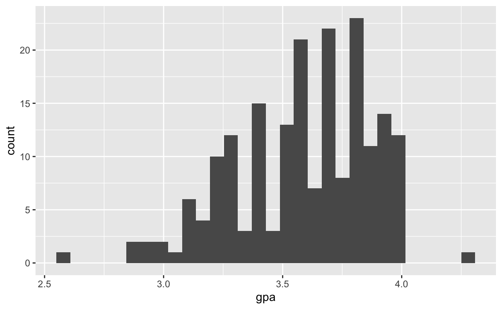
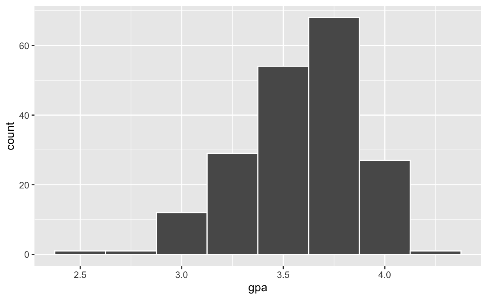
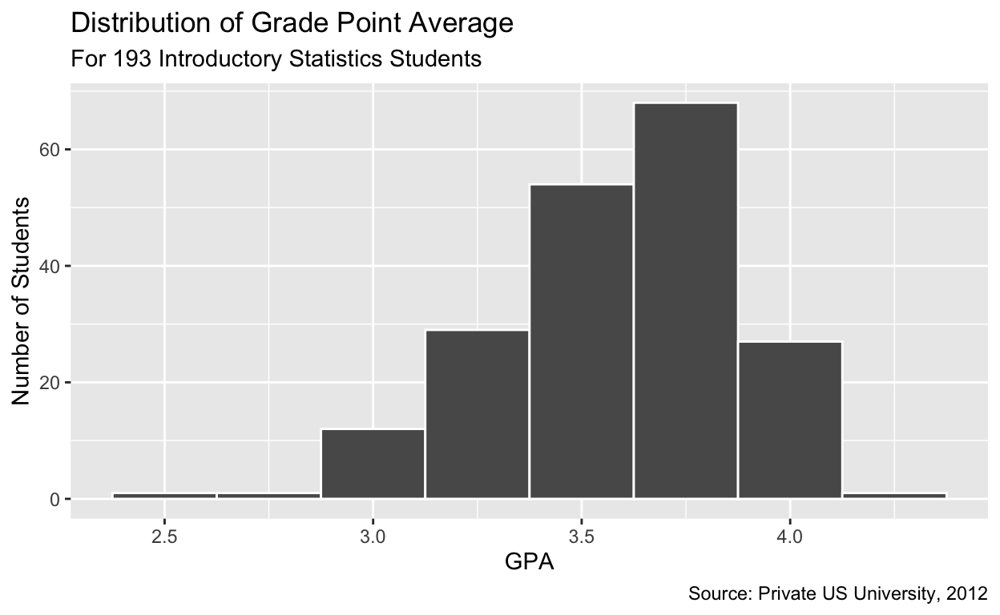
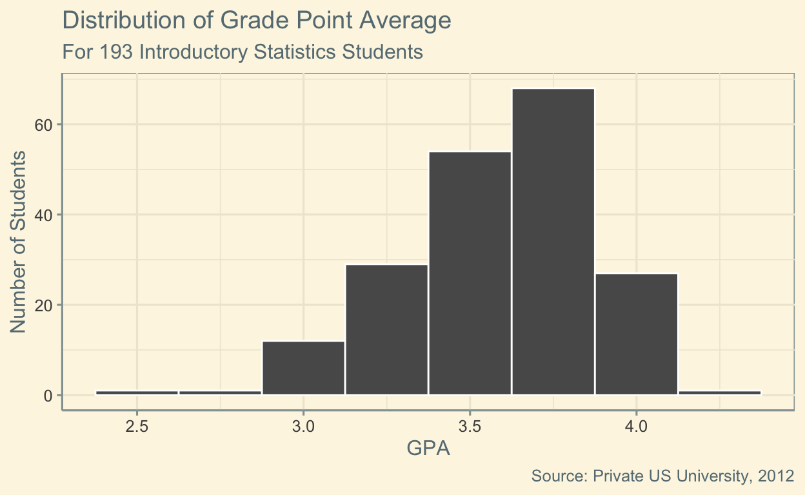
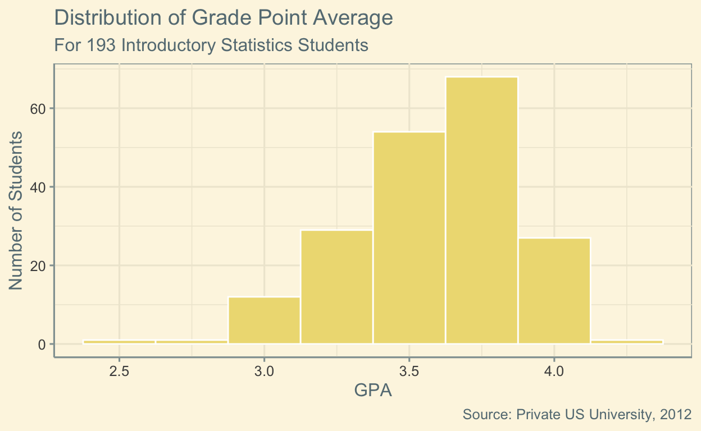

Quality Data Visualization
Being able to analyze data is a good quality. Being able to present
it in a clear, concise format is even better. In part I of our data viz
labs, we create clear and concise plots from the
gpa_study_hours dataset.
For the examples, we’ll use the gpa variable. For
exercises you will use the study_hours variable.
Base Plot
First, lets draw our base histogram.
ggplot(data = gpa_study_hours, aes(x = gpa)) +
geom_histogram()
Recall, we did make a few adjustments to this in lab 1; we changed the color of the border of the bars.
ggplot(data = gpa_study_hours, aes(x = gpa)) +
geom_histogram(color = "White", binwidth = 0.25)
Labels
It would definitely be helpful to add a title and clean up the labels
a bit. Using the ‘Help’ tab in the Directory pane, look up our data set,
gpa_study_hours, and read the description. We’ll use this
to write our labels.
ggplot(data = gpa_study_hours, aes(x = gpa)) +
geom_histogram(color = "White", binwidth = 0.25) +
labs( #the labs() function allows us to add labels to our graph
title = "Distribution of Grade Point Average",
subtitle = "For 193 Introductory Statistics Students",
x = "GPA",
y = "Number of Students",
caption = "Source: Private US University, 2012"
)
Style
For our next step, we’ll add a little flair. We’ll use some styles or
“themes†from the ggthemes package. Use the ‘Packages’ tab
in the Directory pane to look up ggthemes and take a look
at some of our options. Note: In part II of the lab we will create more
custom styles. You can think of part I (this lab) as using a cookie
recipe someone else made. We’ll eat the cookie, see if we like it, and
change what we don’t in the next lab.
ggplot(data = gpa_study_hours, aes(x = gpa)) +
geom_histogram(color = "White", binwidth = 0.25) +
labs(
title = "Distribution of Grade Point Average",
subtitle = "For 193 Introductory Statistics Students",
x = "GPA",
y = "Number of Students",
caption = "Source: Private US University, 2012"
) +
theme_solarized()
I like this theme, but the gray bars seem out of place. I’ll change the recipe a bit.
ggplot(data = gpa_study_hours, aes(x = gpa)) +
geom_histogram(fill = "lightgoldenrod2",
color = "White",
binwidth = 0.25) +
labs(
title = "Distribution of Grade Point Average",
subtitle = "For 193 Introductory Statistics Students",
x = "GPA",
y = "Number of Students",
caption = "Source: Private US University, 2012"
) +
theme_solarized()
That looks much better. To change the color of the bars, I added the
fill argument to the geom_histogram function.
Here is a list of colors
that you can use.
Your Turn!
Create a histogram for study_hours using a different
color for the bars and a theme from the ggthemes package.
ggplot(data = gpa_study_hours, aes(x = ___)) +
geom_histogram(fill = ___,
color = ___,
binwidth = ___) +
labs(
title = ___,
subtitle = ___,
x = ___,
y = ___,
caption = ___
) +
theme____()# NOTE: There are many possible solutions in regards to styling
ggplot(data = gpa_study_hours, aes(x = study_hours)) +
geom_histogram(fill = "gold",
color = "black",
binwidth = 5) +
labs(
title = "Study Hours per week",
subtitle = "For 193 introductory statistics students",
x = "Study Hours",
y = "Number of Students",
caption = "Source: Private US University, 2012"
) +
theme_void()Create a boxplot for study_hours in a similar
fashion.
ggplot(data = gpa_study_hours, aes(x = ___)) +
geom_boxplot(fill = ___,
color = ___) +
labs(
title = ___,
subtitle = ___,
x = ___,
caption = ___
) +
theme____()# NOTE: There are many possible solutions in regards to styling.
ggplot(data = gpa_study_hours, aes(x = study_hours)) +
geom_boxplot(fill = "gold",
color = "black") +
labs(
title = "Study Hours per week",
subtitle = "For 193 introductory statistics students",
x = "Study Hours",
caption = "Source: Private US University, 2012"
) +
theme_void()Submit
Congratulations! You’ve completed our third lab day! Please enter
your name and student ID below, then click Generate.
Copy/paste the hash code into your submission on Sakai.